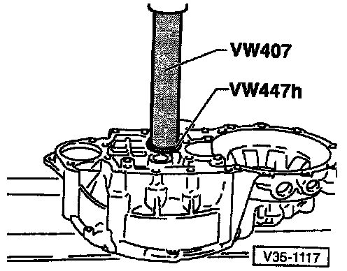
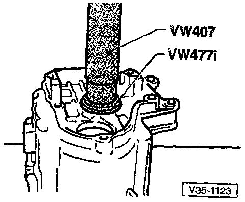
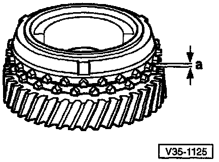
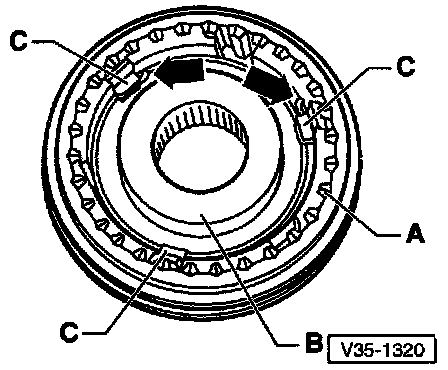

Input Shaft: Service and Repair

1 - Clutch housing
2 - Tapered roller bearing outer race
3 - Tapered roller bearing inner race
4 - Input shaft
5 - 3rd gear (3GR)
6 - Circlip -- Always replace
7 - 4th gear (4GR)
8 - Tapered roller bearing inner race
9 - Thrust washer
10 - Tapered roller bearing outer race
11 - Shim
12 - Transmission housing
13 - Sleeve for needle roller bearing
14 - Needle roller bearing
15 - 5th gear
17 - Spring
16 - 5th gear synchronizer with cast locking lugs on synchro-ring
18 - Lock pieces
19 - 5th gear synchronizer hub (synchro-hub)
20 - 5th gear operating sleeve
COMPONENT DISASSEMBLY-IDENTIFICATION-INSPECTION PROCEDURES
NOTE: The numbers in (parentheses) below, refer to the components key for the exploded image above. The components which require additional disassembly are listed below with a following procedure. The procedures are listed in the order the components are listed, and are not intended to be a sequential disassembly/assembly procedure.
(2) Tapered roller bearing outer race

Pressing Out Tapered Roller Bearing Outer Race

Pressing In Tapered Roller Bearing Outer Race
(3) Tapered roller bearing inner race
- Drive race off input shaft using drift

Pressing On Tapered Roller Bearing Inner Race
(7) 4th gear (4GR)

Pressing Off 4th Gear (4GR) Along With Tapered Roller Bearing Inner Race And Sleeve

Pressing On 4th Gear (4GR)
- Shoulder faces toward 3rd gear (3GR)
(8) Tapered roller bearing inner race
Removing: Press Off Along With 4th Gear (4GR) And Sleeve
Pressing On Tapered Roller Bearing Inner Race
- Shoulder faces toward 3rd gear (3GR)
(10) Tapered roller bearing outer race

Pressing Off Tapered Roller Bearing Outer Race

Pressing In Tapered Roller Bearing Outer Race
- Insert with shim after adjusting input shaft
(11) Shim
- Determining thickness -- Ref Input Shaft Adjustments
(13) Sleeve for needle roller bearing
- Press off along with 4th gear (4GR) and tapered roller bearing inner race

InstallingSleeve For Needle Bearing
- Place thrust washer (9) in position first
(15) 5th gear
- Disassembly/Assembly -- Ref Manual Transmission, Service and Repair
(16) 5th gear synchronizer with cast locking lugs on synchro-ring

Checking 5th Gear Synchro-ring For Wear
- Before installing 5th gear, press synchro-ring onto cone of gear and measure gap a with feeler gauge
^ Gap a = New 1.1 - 1.7 mm (0.O43-0.067 in)
Wear limit 0.5 mm (0.020 in)
- Position 5th gear together with needle roller bearing
Place 5th gear synchro-ring on gear
(17) Spring

Installation Position Of Spring In 5th Gear Operating Sleeve
- Press operating sleeve onto synchro-hub
^ Pointed teeth (A) and shoulder (B) on synchro-hub face same direction
^ Recesses for locking pieces, in synchro-hub and in operating sleeve, must be aligned
^ Install locking pieces
^ Install springs under lugs (C), offset by 120°, under stops (C)
^ Spring must act on all three locking pieces
^ Position angled ends directly behind two locking pieces (arrows)
(18) Lock pieces -- quantity: 3

Installation Position
- Lock pieces = (B)
(19) 5th Gear synchronizer hub (synchro-hub)
- Disassembly/Assembly -- Ref Manual Transmission, Service and Repair
(20) 5th gear operating sleeve
- Disassembly/Assembly -- Ref Manual Transmission, Service and Repair